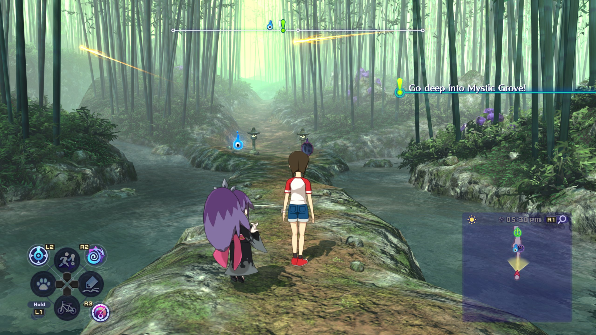
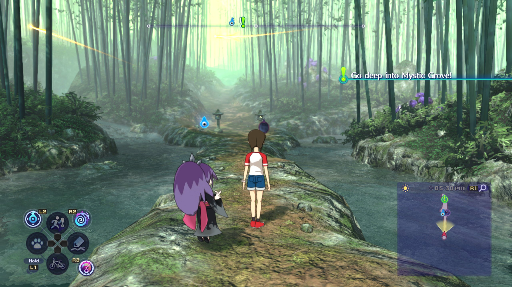

A fan-made PC port of Yo-kai Watch 4++, for Windows and Linux.
The Switch game's code, translated and rebuilt to run natively, with a renderer that is gradually becoming its own: up to 4K, ultrawide, better shadows, DLSS and FSR. You bring your own copy of the game.
Beta Version 1.7.0. Playable, but nobody has finished the game on it yet. Known issues


Switch · 1600×900YW4 Recomp · 4KYour own copy of Yo-kai Watch 4++ with the 2.2.0 update (NSP, XCI or extracted folders, and your keys). Nothing from the game comes with the project.
What the PC version adds, as apps on the Yo-kai Pad. Point at one to see it, click to open it. All the comparisons
Gameplay at 3840×2160 on a gaming laptop
ASUS TUF Gaming A15: Ryzen 9 7940HS, GeForce RTX 4070 Laptop GPU (8 GB), 40 GB RAM. Every graphics setting at its highest. Watch on YouTube
An ASUS Zenbook with integrated Radeon graphics, next to an emulator
About 35-40 frames/s with YW4 Recomp, 22-30 with the Eden emulator (Ryzen 5 7530U). Recorded on game version 0.8.0; newer versions are even more optimized. More showcases
Not an emulator: the game itself, rebuilt for the PC
A static recompiler in the style of N64Recomp: the game's ARM code is translated to C ahead of time and built into a Windows or Linux program, with the Switch's system services and its graphics API reimplemented on the PC (Vulkan).
Unlike an emulator, which replays the game's GPU commands as they are, the port can replace the game's renderer piece by piece. That is how it gets higher resolutions, wider screens, better shadows and DLSS and FSR upscaling.
Built with AI. Claude (Anthropic's model, through Claude Code) wrote most of this project: the recompiler, the runtime, the reverse engineering notes and the docs. A person decides what to work on, plays and tests every build, compares it against the real game and reviews the changes.